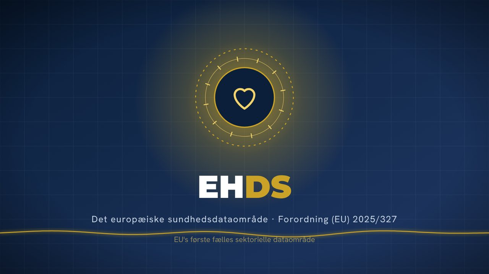

ARG
ARGARGOS › Reglerne på 4 minutter › EHDS
EHDS på 4 minutter: For hospitaler og producenter
EHDS er Unionens første fælles sektorielle dataområde. Fra låste data til data, der rejser med patienten. For hospitaler og producenter ændrer meget sig.

- 0:00Skadestuen
- 0:12Forordningen
- 0:27Hvad ændres
- 0:44EHDS
- 0:51Sådan virker det
- 1:15Prioriterede data
- 1:28Tidsplan
- 1:45Rettigheder
- 1:58I Danmark
- 2:13Hvad gør man
Det vigtigste
- 105 artikler · i kraft siden 26. marts 2025
- 26.3.2027 generel anvendelse
- 2029 første datagruppe og start på sekundær anvendelse
- 2031 anden datagruppe
- 2035 sidste faser
- Øjeblikkelig adgang Patienten ser sine data
- CE-mærkning Journalen, reguleret produkt
- Europæisk format Standardiseret udveksling
Transskription
Den fulde speaktekst
0:00 · Skadestuen
En patient kommer på en skadestue i udlandet. Hendes journal er derhjemme. Hendes prøvesvar, i et andet system. Hendes medicin, på papir. Og lægen beslutter i blinde.
0:12 · Forordningen
Det europæiske sundhedsdataområde vil ændre det. En forordning med 105 artikler, i kraft siden marts 2025. Den giver alle kontrol over egne sundhedsdata og gør journaler udvekslingsbare. Bøderne kan nå tyve millioner euro.
0:27 · Hvad ændres
For hospitaler og producenter ændrer meget sig. Patienten ser sine data med det samme, og hvem der har set dem. Journalsystemer bliver produkter med CE-mærkning. Udveksling sker i et fælles europæisk format. Genbrug kun med tilladelse. Og al adgang logges.
0:44 · EHDS
EHDS er Unionens første fælles sektorielle dataområde. Fra låste data til data, der rejser med patienten.
0:51 · Sådan virker det
Sådan virker det. Primær anvendelse: patienten ser, supplerer, begrænser og deler sine data, også i udlandet. Reguleret produkt: interoperabilitet og adgangslog, med CE-mærkning. Sekundær anvendelse: adgangsorganer giver tilladelse til forskning og AI. I sikre miljøer, med anonymiserede data. Og aldrig for at diskriminere eller genidentificere nogen.
1:15 · Prioriterede data
De prioriterede data kommer i to grupper. Først patientresuméet, e-recepten og den elektroniske udlevering. Derefter billeder og laboratoriesvar, og udskrivningsbreve. Alt i det europæiske udvekslingsformat.
1:28 · Tidsplan
Tidsplanen er lang, men den er i gang. 26. marts 2027: generel anvendelse. 2029: den første datagruppe og start på sekundær anvendelse. 2031: den anden gruppe. Og 2035: de sidste faser.
1:45 · Rettigheder
Patienten får rettigheder. Øjeblikkelig og gratis adgang. Supplere og kræve berigtigelse. Tage sine data med, også til udlandet. Bestemme, hvem der ser hvad. Og vide, hvem der har kigget, og hvornår.
1:58 · I Danmark
I Danmark er sundhed punktum d k allerede borgernes indgang til egne sundhedsdata. Sundhedsdatastyrelsen stiller registerdata til rådighed for forskning. Et fælles adgangsorgan skal udstede tilladelserne. Og EHDS harmoniserer reglerne i hele Europa.
2:13 · Hvad gør man
Hvad gør man nu. Kortlæg systemerne, forbered interoperabilitet og adgangslog, og ordn data til genbrug. ARGOS tjekker EHDS og GDPR på samme tid, med aktive tests på de rigtige systemer, uden at data forlader hospitalet. EHDS: sundhedsdata i patientens tjeneste.
Ofte stillede spørgsmål
Hvad er EHDS?
EHDS er Unionens første fælles sektorielle dataområde. Fra låste data til data, der rejser med patienten. Det europæiske sundhedsdataområde vil ændre det. En forordning med 105 artikler, i kraft siden marts 2025. Den giver alle kontrol over egne sundhedsdata og gør journaler udvekslingsbare. Bøderne kan nå tyve millioner euro.
Hvad kræver EHDS?
Sådan virker det. Primær anvendelse: patienten ser, supplerer, begrænser og deler sine data, også i udlandet. Reguleret produkt: interoperabilitet og adgangslog, med CE-mærkning. Sekundær anvendelse: adgangsorganer giver tilladelse til forskning og AI. I sikre miljøer, med anonymiserede data. Og aldrig for at diskriminere eller genidentificere nogen.
Hvilke datoer er vigtige?
Tidsplanen er lang, men den er i gang. 26. marts 2027: generel anvendelse. 2029: den første datagruppe og start på sekundær anvendelse. 2031: den anden gruppe. Og 2035: de sidste faser.
Hvad gælder i Danmark?
For hospitaler og producenter ændrer meget sig. Patienten ser sine data med det samme, og hvem der har set dem. Journalsystemer bliver produkter med CE-mærkning. Udveksling sker i et fælles europæisk format. Genbrug kun med tilladelse. Og al adgang logges. I Danmark er sundhed punktum d k allerede borgernes indgang til egne sundhedsdata. Sundhedsdatastyrelsen stiller registerdata til rådighed for forskning. Et fælles adgangsorgan skal udstede tilladelserne. Og EHDS harmoniserer reglerne i hele Europa.
Hvad bør en virksomhed gøre nu?
Hvad gør man nu. Kortlæg systemerne, forbered interoperabilitet og adgangslog, og ordn data til genbrug. ARGOS tjekker EHDS og GDPR på samme tid, med aktive tests på de rigtige systemer, uden at data forlader hospitalet. EHDS: sundhedsdata i patientens tjeneste.
Officielle kilder
Se også
 AI-forordningen
AI-forordningenAI-forordningen på 4 minutter: Danmark gik forrest
 NIS2
NIS2NIS2 på 4 minutter: Danmark: NIS2 er allerede lov
 Data Act og DGA
Data Act og DGAData Act og DGA på 4 minutter: Danmark: tilsyn hos myndigheden, bøder ved domstolene
Speak og musik er genereret med kunstig intelligens (art. 50 i AI-forordningen). Generel information, ikke juridisk rådgivning; status november 2026, ifølge Software in a Box’ regulatoriske faktaark. Videoklip under licens fra Envato.
Sådan indlejrer du præsentationen på en anden hjemmeside: <iframe src="https://argos.softwareinabox.eu/da/regler/ehds/presentacion/?embed=1" width="960" height="540" allow="autoplay; fullscreen" title="EHDS på 4 minutter: For hospitaler og producenter"></iframe> med et link til denne side.
Findes også på: EspañolDeutschFrançaisFrançais (Belgique)ItalianoNederlandsNederlands (België)Português